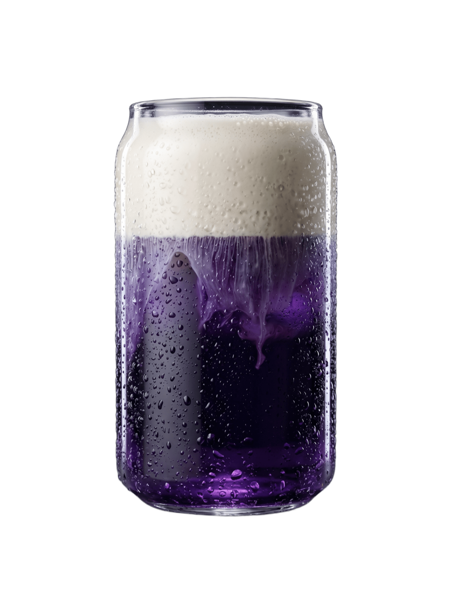

R&D Лаборатория // Флагманский прототип
Интерактивная карта вкуса
Наведите курсор на бокал, чтобы активировать оптический сканер слоев и динамический блик по кривизне стекла.

SCAN // 24.0%
Formula #01 // Lactic Float
Подача: 3°C
ELECTRIC INDIGO FLOAT
Многоуровневая подача с гравитационным каскадом соленой крем-пены сквозь концентрированный экстракт дикой черники и цветов анчана.
Слой 1 / 3 // Верхний горизонт
Холодная соленая крем-пена (Cold Foam)
Плотная эмульсия сливок 10% и морской соли. Задерживает ароматические эфиры и создает контраст температур при первом глотке.
Кислотность
Сладость
Плотность (Body)
Горечь
Технологический комментарий: «Плотная шапка с солевым балансом нейтрализует танинность черники, раскрывая цветочный шлейф клитории без грамма белого сахара».